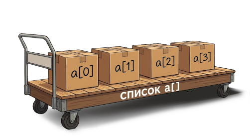
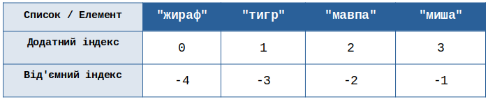
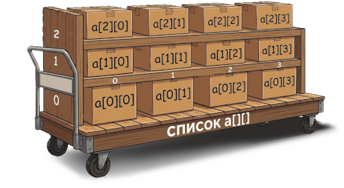

Досі ми працювали зі змінними, які могли зберігати лише одне значення:
city = "Київ" # Одна змінна — одне місто
Якби нам знадобилося зберегти п'ять міст, довелося б писати:
city1 = "Київ"
city2 = "Львів"
city3 = "Одеса"
city4 = "Харків"
city5 = "Дніпро"
Це займає багато місця, а головне — з такими даними важко працювати. Наприклад, якби ми захотіли дізнатися, чи є в цьому переліку місто «Львів», нам довелося б перевіряти кожну змінну окремо.
Список вирішує цю проблему: він об'єднує групу пов'язаних між собою даних в один об'єкт.
Список (list) — це структура даних, яка містить впорядковану сукупність об'єктів Python, що зберігається під одним іменем.
Це спеціальний тип даних — як і цілі числа, float, логічні значення та рядки, які ми розглядали раніше. Список також називають складеним об'єктом, оскільки він містить інші об'єкти.

Щоб створити список у Python, використовують квадратні дужки []. Список оголошується послідовністю значень (не забувайте про лапки, якщо це рядки), розділених комами. Python дозволяє створювати списки, що містять значення різних типів одночасно (наприклад, цілі числа та рядки), що надає їм великої гнучкості:
tvaryny = ["жираф", "тигр", "мавпа", "миша"]
rozmiry = [5, 2.5, 1.75, 0.15]
zmishany = ["жираф", 5, "миша", 0.15]
print(tvaryny)
print(rozmiry)
print(zmishany)
🖥 Результат:
['жираф', 'тигр', 'мавпа', 'миша']
[5, 2.5, 1.75, 0.15]
['жираф', 5, 'миша', 0.15]
Коли ми виводимо список, Python повертає його таким самим, яким він був введений.
Списки можуть містити будь-які типи даних і бути будь-якого розміру:
items = [] # Порожній список (елементів ще немає)
scores = [10, 8.5, 9, 12, 7.3] # Список чисел (можна змішувати int і float)
names = ["Оля", "Петро", "Іван"] # Список рядків
answers = [True, False, True, True] # Список логічних значень
mixed = ["Марко", 14, 3.14, True] # Змішаний список (на практиці — рідко)
["яблуко" "банан" "апельсин"] (без ком) — помилка: Python сприйме сусідні рядкові літерали як один рядок, а не три окремі елементи.
Щоб побачити весь список, достатньо передати його ім'я функції print():
colors = ["red", "green", "blue"]
print(colors) # ['red', 'green', 'blue']
Однією з великих переваг списку є те, що можна отримати доступ до його окремого елемента за позицією. Цей номер називається індексом:
список : ["жираф", "тигр", "мавпа", "миша"]
індекс : 0 1 2 3
n елементів починаються з 0 і закінчуються на n-1.
tvaryny = ["жираф", "тигр", "мавпа", "миша"]
print(tvaryny[0])
print(tvaryny[1])
print(tvaryny[3])
🖥 Результат:
жираф
тигр
миша
Якщо викликати елемент з індексом, якого немає у списку (наприклад, індекс 4 у списку з чотирьох елементів), Python поверне помилку:
tvaryny = ["жираф", "тигр", "мавпа", "миша"]
print(tvaryny[4])
🖥 Результат:
IndexError: list index out of range
Не забувайте про це, інакше ризикуєте отримати неочікувані помилки!
Список також можна індексувати за допомогою від'ємних чисел:

Від'ємні індекси рахують елементи з кінця списку. Їхня головна перевага — доступ до останнього елемента за допомогою індексу -1, навіть не знаючи довжини списку. Передостанній елемент має індекс -2, передпередостанній — -3 тощо:
tvaryny = ["жираф", "тигр", "мавпа", "миша"]
print(tvaryny[-1])
print(tvaryny[-2])
🖥 Результат:
миша
мавпа
Щоб отримати перший елемент за допомогою від'ємного індексу, потрібно знати довжину списку:
tvaryny = ["жираф", "тигр", "мавпа", "миша"]
print(tvaryny[-4])
🖥 Результат:
жираф
У цьому випадку простіше й надійніше використовувати tvaryny[0].
Списки є змінюваними (mutable): можна легко замінити будь-яке значення всередині списку на інше, звернувшись до нього за індексом — так само, як зі звичайною змінною:
colors = ["red", "green", "blue"]
colors[1] = "yellow" # Замінюємо "green" (індекс 1) на "yellow"
print(colors) # ['red', 'yellow', 'blue']
Спроба змінити елемент, якого немає (наприклад, colors[5] = "black" у списку з трьох елементів), спричинить ту саму помилку IndexError: list assignment index out of range.
Функція len() дозволяє дізнатися довжину списку, тобто кількість елементів, які він містить (від англійського length — довжина):
tvaryny = ["жираф", "тигр", "мавпа", "миша"]
print(len(tvaryny))
print(len([1, 2, 3, 4, 5, 6, 7, 8]))
🖥 Результат:
4
8
Де це використовується на практиці:
Довжина порожнього списку
empty = []дорівнює0. Якщо довжина списку дорівнює 10, індекс останнього елемента —9(тобтоlen(spysok) - 1).
+Як і рядки, списки підтримують оператор + для конкатенації. Розглянемо порожній список і додамо до нього елементи, спочатку за допомогою конкатенації:
spysok1 = []
print(spysok1)
spysok1 = spysok1 + [15]
print(spysok1)
spysok1 = spysok1 + [-5]
print(spysok1)
🖥 Результат:
[]
[15]
[15, -5]
Метод .append() додає один елемент у кінець списку:
spysok1 = [15, -5]
spysok1.append(13)
print(spysok1)
spysok1.append(-3)
print(spysok1)
🖥 Результат:
[15, -5, 13]
[15, -5, 13, -3]
У цьому конкретному випадку радимо використовувати метод
.append()— його синтаксис елегантніший, ніж конкатенаціяspysok1 = spysok1 + [15]. Ми детально розглянемо метод.append()у Розділі «Більше про списки».
Часто списки створюють порожніми чи маленькими, а потім поступово наповнюють у процесі роботи програми:
todo_list = [] # Порожній список справ
todo_list.append("Зробити зарядку")
todo_list.append("Вивчити Python")
print(todo_list) # ['Зробити зарядку', 'Вивчити Python']
Якщо .append() завжди додає елемент лише в кінець, метод .insert() дозволяє помістити елемент у будь-яке місце списку. Йому передають два аргументи: insert(індекс, значення):
colors = ["red", "green", "blue"]
colors.insert(1, "white") # Вставляємо "white" на місце з індексом 1
print(colors) # ['red', 'white', 'green', 'blue']
Усі елементи, що стояли після вказаного індексу, автоматично «посуваються» вправо, звільняючи місце для нового елемента. Якщо вказати індекс, що перевищує довжину списку (наприклад, insert(100, "item") для списку з 3 елементів), елемент буде просто додано в кінець — помилки не виникне.
В Python є кілька способів прибрати елементи зі списку.
Спосіб 1. За значенням — .remove(). Якщо відоме саме значення, яке слід видалити, але не відомий його точний індекс:
colors = ["red", "green", "blue"]
colors.remove("green") # Видаляємо саме "green"
print(colors) # ['red', 'blue']
Спосіб 2. За індексом — .pop(індекс). Якщо відомий номер (індекс) елемента, який слід видалити:
colors = ["red", "green", "blue"]
colors.pop(2) # Видаляємо елемент з індексом 2 (це "blue")
print(colors) # ['red', 'green']
Спосіб 3. Видалення останнього елемента — .pop() без аргументів. Якщо викликати .pop() без дужок з аргументом, він автоматично видалить найостанній елемент списку — це дуже зручно й часто використовується:
colors = ["red", "green", "blue"]
colors.pop() # Видаляє останній елемент ("blue")
print(colors) # ['red', 'green']
Повне очищення — .clear(). Якщо потрібно видалити геть усі елементи й зробити список абсолютно порожнім (наприклад, покупець скасував замовлення, і кошик потрібно очистити):
colors = ["red", "green", "blue"]
colors.clear() # Видаляє геть усе
print(colors) # []
Після
.clear()список продовжує існувати — просто стає порожнім ([]), на відміну від повного видалення змінної.
Перед тим як видаляти елемент чи щось із ним робити, корисно дізнатися, чи є він взагалі у списку. Для цього в Python є оператор in. Результатом перевірки буде логічне значення True або False; зручно поєднувати таку перевірку з умовою if (докладніше про умови — в Розділі 6):
colors = ["red", "green", "blue"]
print("blue" in colors) # True
print("yellow" in colors) # False
if "blue" in colors:
print("Ура! Синій колір є у списку.")
Оператор
inвраховує регістр літер:"Red" in ["red", "green"]повернеFalse, оскільки"Red"(з великої літери) відрізняється від"red".
Перевірка через in особливо корисна перед видаленням за значенням: спроба .remove() елемента, якого немає у списку, спричинить помилку ValueError: list.remove(x): x not in list.
+Якщо є два окремі списки, які потрібно об'єднати в один, достатньо скласти їх за допомогою оператора +:
tvaryny1 = ["жираф", "тигр"]
tvaryny2 = ["мавпа", "миша"]
print(tvaryny1 + tvaryny2)
🖥 Результат:
['жираф', 'тигр', 'мавпа', 'миша']
Оператор + дуже зручний саме для конкатенації двох списків. Зверніть увагу: початкові списки (tvaryny1, tvaryny2) при цьому не змінюються — результат + це новий список.
*Списки, як і рядки, підтримують оператор * для дублювання:
tvaryny1 = ["жираф", "тигр"]
print(tvaryny1 * 3)
🖥 Результат:
['жираф', 'тигр', 'жираф', 'тигр', 'жираф', 'тигр']
Це особливо корисно, коли потрібно швидко створити великий список з однаковими початковими значеннями:
zeros = [0] * 10 # [0, 0, 0, 0, 0, 0, 0, 0, 0, 0]
words = ["Привіт"] * 3 # ['Привіт', 'Привіт', 'Привіт']
Ще однією перевагою списків є можливість вибрати частину списку — зріз (slice) — використовуючи індексацію за моделлю [m:n], щоб отримати всі елементи від m-го включно до n-го виключно:
tvaryny = ["жираф", "тигр", "мавпа", "миша"]
print(tvaryny[0:2])
print(tvaryny[0:3])
print(tvaryny[0:])
print(tvaryny[:])
print(tvaryny[1:])
print(tvaryny[1:-1])
🖥 Результат:
['жираф', 'тигр']
['жираф', 'тигр', 'мавпа']
['жираф', 'тигр', 'мавпа', 'миша']
['жираф', 'тигр', 'мавпа', 'миша']
['тигр', 'мавпа', 'миша']
['тигр', 'мавпа']
Якщо жоден індекс не вказано ліворуч або праворуч від двокрапки :, Python за замовчуванням бере всі елементи від початку або до кінця відповідно (тому tvaryny[:] — це копія всього списку, а numbers[:3] — перші три елементи, numbers[-3:] — останні три елементи).
Можна також вказати крок, додавши другу двокрапку і крок цілим числом:
tvaryny = ["жираф", "тигр", "мавпа", "миша"]
print(tvaryny[0:3:2])
x = [0, 1, 2, 3, 4, 5, 6, 7, 8, 9]
print(x[::1])
print(x[::2])
print(x[::3])
print(x[1:6:3])
🖥 Результат:
['жираф', 'мавпа']
[0, 1, 2, 3, 4, 5, 6, 7, 8, 9]
[0, 2, 4, 6, 8]
[0, 3, 6, 9]
[1, 4]
Отже, доступ до вмісту списку працює за загальною моделлю spysok[pochatok:kinets:krok].
Зверніть увагу на поведінку Python, яка може здатися дивною при копіюванні списку:
spysok1 = list(range(5))
print(spysok1)
spysok2 = spysok1
print(spysok2)
spysok1[3] = -50
print(spysok1)
print(spysok2)
🖥 Результат:
[0, 1, 2, 3, 4]
[0, 1, 2, 3, 4]
[0, 1, 2, -50, 4]
[0, 1, 2, -50, 4]
Як бачите, зміна spysok1 після присвоєння spysok1[3] = -50 також змінила spysok2! Це відбувається тому, що інструкція spysok2 = spysok1 не створює новий список, а лише пов'язує новий список зі старим списком — обидва імені вказують на один і той самий об'єкт у пам'яті.
Щоб зробити spysok2 дійсно окремим списком, є два рівноцінні способи.
Спосіб 1 — функція list():
spysok1 = list(range(5))
spysok2 = list(spysok1)
spysok1[3] = -50
print(spysok1)
print(spysok2)
🖥 Результат:
[0, 1, 2, -50, 4]
[0, 1, 2, 3, 4]
Спосіб 2 — метод .copy():
a = [1, 2, 3]
b = a.copy() # Справжня, окрема копія
b[0] = 999
print(b) # [999, 2, 3]
print(a) # [1, 2, 3] — оригінал не змінився
Цей трюк (як через
list(), так і через.copy()) працює лише для одновимірних списків, тобто списків, які містять лише елементи простого типу (цілі числа,float, рядки, булеві значення), але не для списків списків. Розділ «Більше про списки» пояснює походження цієї поведінки та як з нею впоратися в загальному випадку.
Функція range() — спеціальна функція Python, яка генерує цілі числа в заданому інтервалі. У поєднанні з функцією list() вона дає список цілих чисел:
print(list(range(10)))
🖥 Результат:
[0, 1, 2, 3, 4, 5, 6, 7, 8, 9]
Вказівка list(range(10)) згенерувала список усіх цілих чисел від 0 включно до 10 виключно. Використання range() самостійно (без list()) ми побачимо в Розділі 5 «Цикли та порівняння».
Функція range() може приймати один, два або три аргументи:
print(list(range(0, 5)))
print(list(range(15, 20)))
print(list(range(0, 1000, 200)))
print(list(range(2, -2, -1)))
🖥 Результат:
[0, 1, 2, 3, 4]
[15, 16, 17, 18, 19]
[0, 200, 400, 600, 800]
[2, 1, 0, -1]
Інструкція range() працює за моделлю range([pochatok,] kinets[, krok]). Аргументи в квадратних дужках необов'язкові. Щоб отримати список цілих чисел, range() систематично поєднують з list().
Обережно з аргументами за замовчуванням (0 для початку і 1 для кроку):
print(list(range(10, 0)))
🖥 Результат:
[]
Список порожній, оскільки крок за замовчуванням дорівнює 1: рухаючись від 10 з кроком 1, ми ніколи не досягнемо 0. Щоб отримати список спадних цілих чисел, потрібно явно вказати від'ємний крок:
print(list(range(10, 0, -1)))
🖥 Результат:
[10, 9, 8, 7, 6, 5, 4, 3, 2, 1]
Цілком можливо створювати списки списків — ця можливість часто буває дуже зручною:
tvaryna1 = ["жираф", 4]
tvaryna2 = ["тигр", 2]
tvaryna3 = ["мавпа", 5]
zoopark = [tvaryna1, tvaryna2, tvaryna3]
print(zoopark)
🖥 Результат:
[['жираф', 4], ['тигр', 2], ['мавпа', 5]]
У цьому прикладі кожен підсписок містить категорію тварин і кількість тварин цієї категорії.

Щоб отримати доступ до елемента списку, використовують звичайне індексування:
tvaryna1 = ["жираф", 4]
tvaryna2 = ["тигр", 2]
tvaryna3 = ["мавпа", 5]
zoopark = [tvaryna1, tvaryna2, tvaryna3]
print(zoopark[1])
🖥 Результат:
['тигр', 2]
Щоб отримати доступ до елемента підсписку, використовують подвійне індексування:
tvaryna1 = ["жираф", 4]
tvaryna2 = ["тигр", 2]
tvaryna3 = ["мавпа", 5]
zoopark = [tvaryna1, tvaryna2, tvaryna3]
print(zoopark[1][0])
print(zoopark[1][1])
🖥 Результат:
тигр
2
Ми побачимо трохи далі, що в Python є словники, дуже зручні для зберігання структурованої інформації, а також модуль NumPy, який дозволяє створювати списки або масиви чисел (вектори та матриці) і маніпулювати ними.
Функції min(), max() та sum() повертають відповідно мінімум, максимум та суму списку, переданого як аргумент:
spysok1 = list(range(10))
print(spysok1)
print(sum(spysok1))
print(min(spysok1))
print(max(spysok1))
🖥 Результат:
[0, 1, 2, 3, 4, 5, 6, 7, 8, 9]
45
0
9
Хоча теоретично ці функції можуть приймати список рядків, зазвичай їх використовують із числовими типами. Спроба знайти sum(["кіт", "песик"]) спричинить помилку TypeError.
Ми вже зустрічали min() і max() у Розділі 2 «Змінні» — там вони приймали кілька окремих цілих та/або float аргументів:
print(min(3, 4))
🖥 Результат:
3
Обережно: не змішуйте окремі числа зі списком в одному викликові — це поверне помилку:
spysok1 = list(range(10))
print(min(spysok1, 3, 4))
🖥 Результат:
TypeError: '<' not supported between instances of 'int' and 'list'
Або передавайте кілька окремих чисел, або передавайте один список.
Ще кілька корисних інструментів для роботи зі списками:
.sort() — сортує елементи списку (числа від найменшого до найбільшого, текст — за алфавітом);.reverse() — розгортає список «задом наперед»;.count(значення) — рахує, скільки разів певне значення зустрічається у списку;.index(значення) — шукає значення у списку і повертає його індекс.numbers = [8, 2, 5, 1]
numbers.sort()
print(numbers) # [1, 2, 5, 8] — відсортовано
numbers.reverse()
print(numbers) # [8, 5, 2, 1] — розгорнуто
items = [5, 9, 5, 3, 5]
print(items.count(5)) # 3 — число 5 зустрічається 3 рази
names = ["Оля", "Андрій", "Ігор"]
print(names.index("Андрій")) # 1 — ім'я "Андрій" стоїть під індексом 1
Метод
.index()спричинить помилкуValueError, якщо шукане значення відсутнє у списку — перед пошуком індексу корисно перевірити наявність значення операторомin(§4.9).
При роботі зі списками початківці часто припускаються кількох класичних помилок.
Помилка 1. Індекс виходить за межі списку (IndexError)
colors = ["red", "green"]
print(colors[5])
# Помилка: IndexError: list index out of range
Чому це сталося: ви просите елемент під номером 5, але у списку всього 2 елементи (індекси 0 та 1) — елемента 5 не існує. Як виправити: перевірити довжину списку за допомогою len() і переконатися, що індекс правильний.
Помилка 2. Переплутали дужки або звернулися до елемента як до функції
my_list = (1, 2, 3) # Круглі дужки замість квадратних — це вже інший тип даних!
numbers = [1, 2, 3]
print(numbers(1)) # Помилка: TypeError — так не звертаються до елемента списку
Як виправити: пам'ятайте, що списки завжди створюються квадратними дужками [], а доступ до елемента — теж через квадратні дужки: numbers[1], а не numbers(1).
Помилка 3. Спроба знайти чи видалити елемент, якого немає
items = ["книга", "зошит"]
items.remove("ручка")
# Помилка: ValueError: list.remove(x): x not in list
Як виправити: перед видаленням чи пошуком індексу перевірити наявність елемента через if "ручка" in items: (§4.9).
Повернемося на мить до поняття методу, з яким ми неодноразово стикалися в цьому розділі (.append(), .insert(), .remove(), .pop(), .clear(), .sort(), .reverse(), .count(), .index(), .copy()). У Python кожну змінну можна розглядати як об'єкт, до якого можна застосовувати методи. Метод — це функція, яка використовує та/або діє на сам об'єкт, і обидва вони з'єднані крапкою. Загальний синтаксис має вигляд obiekt.metod().
Метод — це дія, яку вміє виконувати певний об'єкт.
У Python дії, що пов'язані з об'єктом називаються методами.
Наприклад:
fruits = ["яблуко", "груша"]
fruits.append("слива")
Тут:
fruits — це об'єкт (список);append() — метод;Різниця між функцією і методом полягає в тому, як вони викликаються і звідки беруть об'єкт, з яким працюють.
Функція - самостійна одиниця коду. Викликається сама по собі, а об'єкт, з яким вона має працювати, передається їй як аргумент усередині дужок.
lst = [3, 1, 2]
len(lst) # об'єкт lst передається ЯК аргумент
sorted(lst) # так само
Функція «не належить» жодному об'єкту — вона існує сама по собі (це може бути вбудована функція типу len(), print(), або функція, яку ви самі оголосили через def).
Метод - це, по суті, функція, яка «прив'язана» до конкретного об'єкта (є частиною його класу). Викликається через крапку від самого об'єкта, і цей об'єкт неявно передається методу як перший аргумент (self).
lst = [3, 1, 2]
lst.sort() # метод викликається ВІД lst через крапку
lst.append(4) # так само
Тобто lst.sort() — це фактично щось на кшталт «виклич функцію sort, яка живе всередині класу list, і застосуй її саме до lst».
Методи можуть відрізнятися залежно від типу об'єкта. Наприклад, .append() є в списків, але його немає у рядків — натомість у рядків свій набір методів (.upper(), .split() тощо). А ось функції типу len() — універсальніші й працюють з багатьма типами (списками, рядками, словниками), якщо ті підтримують підрахунок довжини.
У цьому прикладі:
spysok1 = [1, 2]
spysok1.append(3)
print(spysok1)
🖥 Результат:
[1, 2, 3]
метод .append() пов'язаний зі spysok1, який є об'єктом типу список. Метод змінює об'єкт-список, додаючи до нього елемент.
| Інструмент | Тип | Опис дії | Приклад використання | Результат |
|---|---|---|---|---|
len(lst) |
Функція | Повертає кількість елементів у списку (довжину) | len([10, 20, 30]) |
3 |
max(lst) |
Функція | Повертає максимальний елемент списку | max([5, 12, 3]) |
12 |
min(lst) |
Функція | Повертає мінімальний елемент списку | min([5, 12, 3]) |
3 |
sum(lst) |
Функція | Повертає суму всіх елементів (для числових списків) | sum([1, 2, 3]) |
6 |
sorted(lst) |
Функція | Повертає новий відсортований список, не змінюючи оригінальний | lst = [3, 1, 2]sorted(lst) |
[1, 2, 3] (оригінальний lst лишиться [3, 1, 2]) |
list(iterable) |
Функція | Конвертує інший тип даних (наприклад, рядок чи кортеж) у список | list('abc') |
['a', 'b', 'c'] |
append(x) |
Метод | Додає елемент x в кінець списку |
lst = [1, 2]lst.append(3) |
[1, 2, 3] |
extend(iterable) |
Метод | Розширює список елементами з іншої послідовності | lst = [1, 2]lst.extend([3, 4]) |
[1, 2, 3, 4] |
insert(i, x) |
Метод | Вставляє елемент x на позицію з індексом i |
lst = [1, 3]lst.insert(1, 2) |
[1, 2, 3] |
remove(x) |
Метод | Видаляє перший знайдений елемент зі значенням x |
lst = [1, 2, 3, 2]lst.remove(2) |
[1, 3, 2] |
pop([i]) |
Метод | Видаляє та повертає елемент за індексом i (або останній) |
lst = [1, 2, 3]item = lst.pop(1) |
lst → [1, 3], item → 2 |
clear() |
Метод | Повністю очищає список | lst = [1, 2, 3]lst.clear() |
[] |
index(x) |
Метод | Повертає індекс першого елемента зі значенням x |
lst = ['a', 'b']lst.index('b') |
1 |
count(x) |
Метод | Рахує, скільки разів елемент x зустрічається в списку |
lst = [1, 2, 2]lst.count(2) |
2 |
sort() |
Метод | Сортує елементи оригінального списку на місці | lst = [3, 1, 2]lst.sort() |
lst стане [1, 2, 3] |
reverse() |
Метод | Розвертає оригінальний список задом наперед на місці | lst = [1, 2, 3]lst.reverse() |
lst стане [3, 2, 1] |
copy() |
Метод | Створює копію списку | lst = [1, 2]new = lst.copy() |
[1, 2] |
sort() (метод) та sorted() (функція). Перший змінює ваш початковий список назавжди, а другий створює новий чистий дублікат уже у відсортованому вигляді, зберігаючи оригінал недоторканим.
Дано наступні три рядки коду:
spysok1 = list(range(10, 15))
zminna = 0
zminna2 = 10
Передбачте поведінку кожної інструкції нижче, не переписуючи їх у скрипт чи інтерпретатор Python:
print(spysok1[2])print(spysok1[zminna])print(spysok1[zminna2])print(spysok1["zminna"])Коли інструкція викликає помилку, визначте чому.
Складіть список tyzhden, що містить сім днів тижня.
.reverse() та на зріз із кроком -1).Створіть чотири списки zyma, vesna, lito та osin, що містять місяці, відповідні цим порам року. Потім створіть список pory_roku, що містить списки zyma, vesna, lito та osin. Передбачте, що повернуть наступні інструкції, а потім перевірте це в інтерпретаторі:
pory_roku[2]pory_roku[1][0]pory_roku[1:2]pory_roku[:][1]. Як ви поясните цей останній результат?Виведіть таблицю множення на 9 однією командою за допомогою інструкцій range() та list().
Дайте відповідь на наступне запитання однією командою. Скільки парних чисел у інтервалі [2, 10000] включно?
my_friends з іменами трьох ваших друзів і виведіть його на екран.temperatures з п'яти числових значень температури за робочий тиждень.shopping_cart.animals = ["кіт", "собака", "папуга", "хом'як"]. Який індекс має "собака"? Виведіть її, використовуючи цей індекс.subjects = ["Математика", "Музика", "Фізика"]. Замініть "Музика" на "Інформатика" і виведіть оновлений список.numbers_list. Послідовно додайте в нього числа 10, 20 та 30 методом .append() і виведіть результат.queue = ["Оля", "Іван", "Петро"]. Вставте "Андрій" на перше місце (індекс 0) методом .insert().[12, 10, 5, 11]. Видаліть оцінку 5 за її значенням (.remove()), а потім — окремо — за індексом (.pop())..clear(). Поясніть, чим це відрізняється від видалення самої змінної.guests = ["Тарас", "Олена", "Максим"]. Напишіть перевірку через if, яка виведе "Заходь!", якщо у списку є ім'я "Олена".[10, 11, 12, 9].print("Red" in ["red", "green"])? Поясніть результат.[1, 2, 3] та [4, 5, 6] за допомогою +. Чи змінюються початкові списки після об'єднання?[1, 2] * 3? Спробуйте передбачити результат, а потім перевірте.days = ["Пн", "Вт", "Ср", "Чт", "Пт", "Сб", "Нд"], виріжте з нього лише робочі дні, а потім — окремо — лише вихідні ("Сб" та "Нд"), використовуючи зрізи.a = [1, 2, 3] і спробуйте скопіювати його в b спочатку через b = a, а потім через b = a.copy(). Змініть перший елемент b в обох випадках і поясніть різницю в результаті..sort() і виведіть на екран.[1, 2, 3, 2, 4, 2] порахуйте методом .count(), скільки разів повторюється число 2.1. Телефонна книга вручну. Створіть порожній список contacts. Імітуйте додавання трьох контактів користувачем за допомогою .append(): спочатку "Мама: 093...", потім "Тато: 095...", потім "Друг: 099...". Виведіть оновлений список контактів, а також окремо — перший і останній контакти.
2. Список покупок та чек. Створіть список покупок cart = ["Хліб", "Молоко"]. Додайте "Сік" за допомогою .append(), а "Шоколад" вставте на перше місце за допомогою .insert(). Виведіть весь список. Видаліть "Хліб". Надрукуйте фінальний список товарів.
3. Оформлення меню кафе. Створіть список страв menu = ["Піца", "Бургер", "Паста"] та список цін prices = [150, 90, 120]. Виведіть меню у вигляді:
=== МЕНЮ ===
1. Піца — 150 грн
2. Бургер — 90 грн
3. Паста — 120 грн
(підказка: використовуйте виведення елементів за індексами 0, 1, 2 та коми у print()). Порахуйте за допомогою sum(), скільки коштуватиме замовлення, якщо клієнт купить абсолютно всі страви з меню.